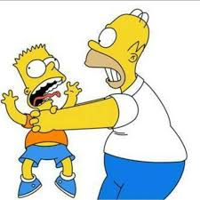

2001.03.11
2020년 제가 크롱일때 찍은사진입니다.
이때는 뽀로랑 신나게 놀던 때 입니다.

2001.03.11
결혼한 후에는 이런 모습이네요...@
건강한 모습을 유지하고 있습니다.
《심슨 가족》(The Simpsons)은 맷 그레이닝이 창작하고
폭스 브로드캐스팅 컴퍼니에서 방영하는 미국의 시트콤 애니메이션이다.
이 시리즈는 노동 계급의 삶을 호머, 마지, 바트, 리사, 매기로 구성된
심슨 일가로 전형화하여 풍자하고 있다. 《심슨 가족》은 가상의 주
스프링필드를 배경으로 유머, 미국 전통의 문화, 전반적인 사회, 텔레비전 문화와 같은
다양한 부분을 풍자한다.